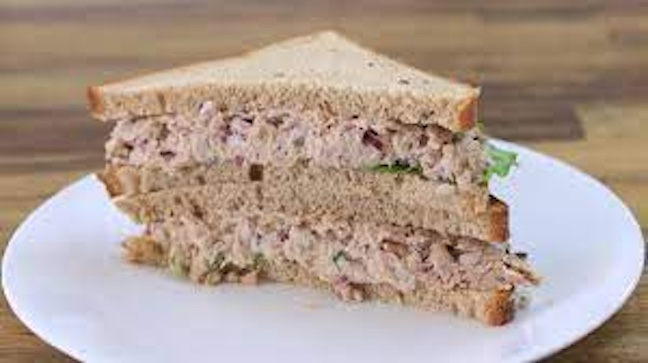

A Normal Tuna Sandwich

Are you ever too lazy to cook, but to broke to order delivery? This is the recipe for you!
Ingredients
- 2 slices of butter bread
- 1 packet of target tuna
- 2 tablespoons of low fat mayo
- A couple pickle slices
- 1/4 cup of chopped iceberg lettuce
- A little bit of hot sauce
Steps
- Toast your bread
- Put tuna and mayo in a bowl and combine
- Put a little hot sauce on one slice of bread and spread evenly
- Place pickle slices on other slice of bread
- Scoop tuna and place on top of bread with the pickles
- Place lettuce on top of tuna
- Place hot sauce bread on top of lettuce and complete the sandwich
- Serve with chips or fries and enjoy!